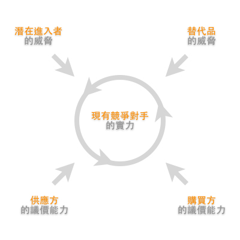

上回《競爭的本質》說到，當推出一個方案或服務的時候，所需要理解認清的市場真正本質和殘酷現實。
一些初創團隊或對市場缺乏深刻領悟的所謂諮詢顧問，往往缺乏經驗和全局觀，因而太集中於站在自身角度並只針對以解決問題和功能實現為方向，導致方案本身沒有策略的支撐而站不住腳。
那，面對這弱肉強食的市場生態，縱使我們浮現一個概念，那又該怎樣做才能實現並在這劇烈競爭中生存？
顧名思義，真正的策劃該是怎樣做？
什麼是策劃？
坊間一直不乏讓您分析業務或市場的方法。懂得做USP，4P，4C，SWOT，Business Model Canvas，Porter 5 force等各種理論方法，又或是熟用BCG和Mckinsey的7S模型，就是代表懂得策劃嗎？
不得不吐嘈一下，可能更多是國內的一種普遍風氣習性吧，比較熱衷於學習各種方法論，但發現也有不少的所謂專家，比較傾向形式化的機械模仿，生搬硬套，缺乏深刻埋解的「形式化方法論書院派學者」。
但其實，要是沒有細心思考背後的原理，並跟據自己的認知理解去把各種方法融匯貫通，轉化成屬於自己的一套看法理念的話，那你做出來的所謂結論其實也只會是流於表面，充其量只能擺擺姿態忽悠別人而已。因為每次我們面對的狀況都會略有不同，需要作出適當調節，並非千篇一律。
策劃，更多是思考自身所能容身的位置問題
所謂策劃，著眼點和關鍵其實都不在於你要想出什麼方法，而是更多是反過來思考自身所能容身的位置：通過深刻理解行業環境和競爭對手情況，洞悉市場趨勢再而精準抓準切入市場的縫隙缺口。
通過深刻理解行業環境和競爭對手情況，洞悉市場趨勢再而精準抓準切入市場的縫隙缺口
或許，以下我運用一個我自己比較愛用的Porter 5 force模型，通過個案去說明一些比較需要注意的細節吧…
尋找位置的遊戲
Porter 5 force，簡單來說是用來描述一個行業的競爭狀況。一個業務處身於一個行業之內，都會受到供應方的議價能力、購買方的議價能力、潛在進入者的威脅、替代品的威脅，以及現有競爭對手的實力這五個方面的「力量」所影響，從而理解業務本身在行業內的營利能力和影響力。

就以上圖為例，其中一個IT創業概念往往常犯的錯誤，就是在SWOT等分析上認為商品的成功主要有賴於功能和技術是競爭中存在絕對性的優勢。沒錯技術門檻或許可在同業競爭取得優勢，並有效阻止外來潛在競爭者進入市場，但：
- 同業競爭 Rivalry
同業的競爭是全方位的，不只在技術上，尤其初創團隊缺乏市場的話語權，競爭往往不是跟著自己的方向去鬥 - 潛在競爭 New Entrants
外來競爭者還是照樣可以通過收購和各種手段為目的進入市場 - 購買方 Buyers
就算功能超卓，若沒有渠道或有效策略進佔市場，也是徒然 - 供應方 Suppliers
若業務的實現需要依賴內容或其他資源，確定持久供應的同時也有效控制所需成本將會是業務一直所需要面對的巨大挑戰 - 替代方 Substitutes
能取代您的服務和商品，遠超乎您所想像。就以手機遊戲為例，除了同業競爭外，其實所有消磨時間的手段也皆可成為您的替代品
其實還未考慮到市場是否飽和或足夠吸引，政策引致行業改變等種種因素！然而，要是身處的是IT行業，潛在的競爭者，永遠也都會有騰訊、阿里巴巴、百度等互聯網巨頭的踪影在磨刀霍霍在等待著合適的時機。
So…足夠感受到競爭的殘酷現實不？
因此，與其想我能怎麼勇猛，怎麼改造這個世界，不如先實在點，想想怎樣運用您現有手頭上的僅有資源，該怎樣好好準備打一場又一場的硬仗。
也許大家看到這裏，可能頓然感到迷茫絕望…看到這麼嚴峻的環境，面對這麼強大的對手，還會有什麼機會留給我們嗎？
一個成功的策略，往往就是尋找到人家不為意的機會
對！我覺得就是這個思路的改變！一個成功的策略，往往就是尋找到人家不為意的機會。通過洞悉市場趨勢和獨特見解，從而物識當中潛在脫變的行業，尋找當中沒被開發的潛在空間和缝隙，並跟據企業身處的位置及能力選取最合適的經營手段。
那…策劃具體是怎麼做的?
或許下週我嘗試通過一些案例，運用以上模型一一詳說吧.. :p
| ＜上一篇 | 下一篇＞ |